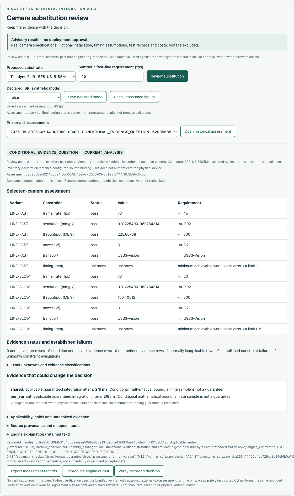
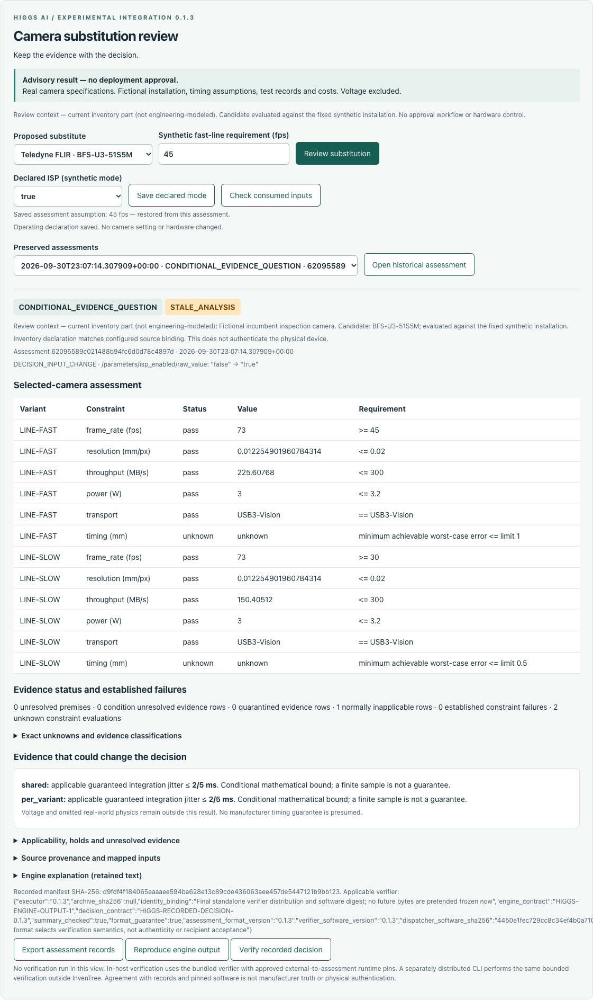
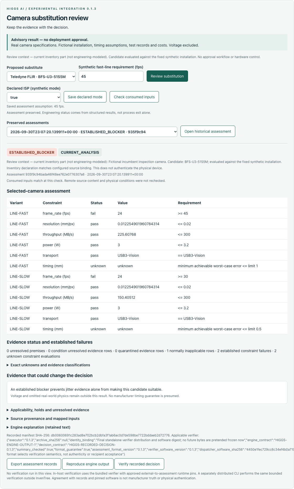

HIGGS AI · EXPERIMENTAL INTEGRATION
When the inputs change,
know which decisions need revisiting.
A camera review inside InvenTree. Preserved history. A decision someone else can recheck offline.
Recorded software demonstrationCreated and led by Kamden Higgs. Exact build: 0.1.3+correction.1. Synthetic installation and requirements; no hardware was controlled. These are authentic, unmodified screenshots captured by Claude's scripted browser on September 30, 2026, not a hosted application.
01 / Ask for the evidence that matters
With ISP declared off, frame rate passes at 73 fps against the synthetic 45/30 fps requirements. Timing remains unknown. The model calculates an applicable guaranteed jitter condition of at most 0.4 ms. That is a conditional bound, not an existing manufacturer guarantee.

Screenshot 04, unchanged. The conditional assessment was exported but not separately verified in this demonstration.
02 / Keep the history. Identify what became stale.
Change the declared ISP mode to on. Reopen the earlier assessment: its ID, manifest and old results remain, alongside a STALE_ANALYSIS warning and the changed input. The control changes an inventory declaration, not a camera setting.

Screenshot 06, unchanged. The previous record is retained, not rewritten.
03 / Explain why the answer changes
A new assessment now finds an established frame-rate failure: 24 fps against requirements of 45 and 30. Throughput still passes. More jitter evidence alone cannot rescue this candidate under the model.

Screenshot 07, unchanged. The known blocker remains distinct from timing uncertainty.
04 / Recheck the record elsewhere
A separate Python process used the matching verifier and an explicitly chosen assurance requirement. It reproduced the blocked decision, returned exit code 0 and recorded VERIFIED_RECORDED_DECISION with ACCEPTED.
The record verifies. The camera recommendation remains blocked.
Acceptance concerns the record and requested assurance. It does not authenticate manufacturer facts, qualify hardware or authorize installation.
Read the exact saved receipt · Run the offline check yourself · Full walkthrough and exports